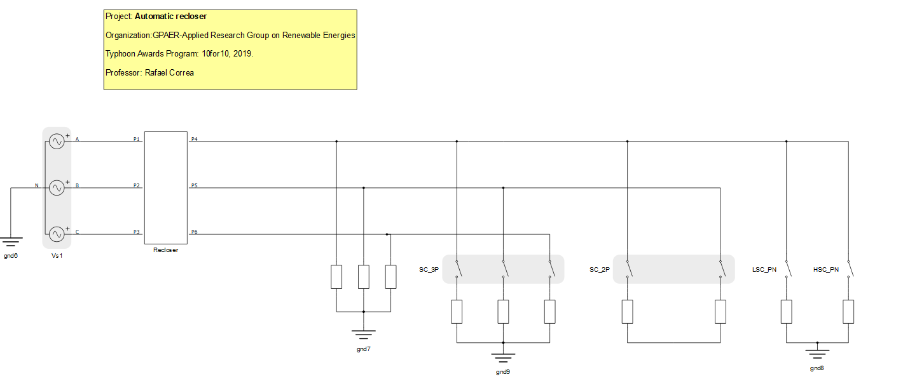
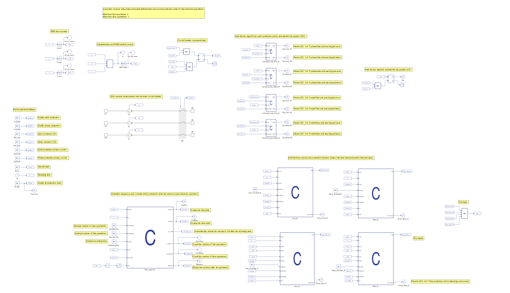
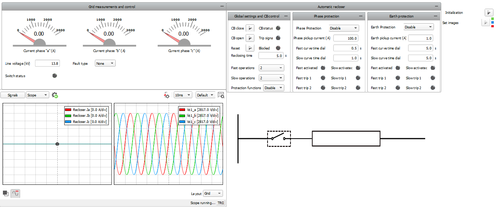
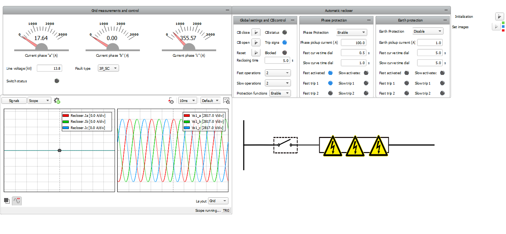
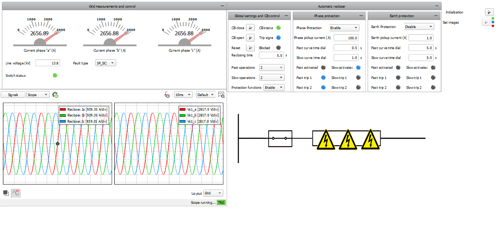
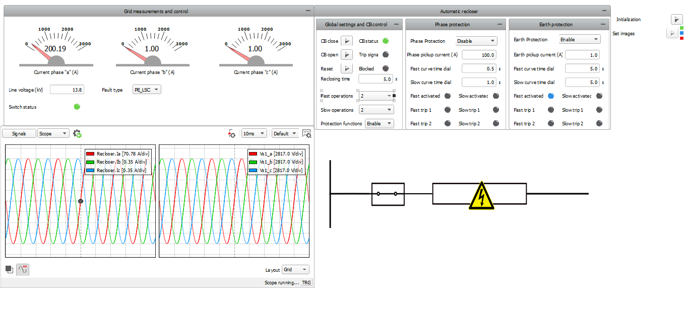

Automatic recloser
Demonstration of an automatic recloser example model with built in phase and earth protections.
Introduction
Automatic reclosers can be defined as self-controlled devices that are able to interrupt and reclose an alternating-current circuit. They are important components in electric grids since they automatically restore service after contingency circumstances. Approximately 90% of faults occurring on overhead lines are transient, therefore the restoration provided by the automatic reclosers substantially improves service continuity to customers by reducing outage time.
This application note presents a simple model of an automatic recloser. The model demonstrates the operational aspects of an automatic recloser with four reclosing operations where you can adjust the tripping currents and timings for the fast and slow curves after phase and earth protection units. Automatic reclosers of this type can be found in smart grid protection schemes.
Model Description
The model is mostly composed of signal processing components, implementing the automatic recloser behavior with definite time-overcurrent protection for fast and slow operations. The electrical part of the model consists of a three-phase voltage representing the grid, a triphasic load and controlled switches to simulate different types of faults, as shown in Figure 1.

Inside the Recloser subsystem you can find the operation logic of the automatic recloser. The equipment works only if the time-overcurrent curves are defined. This can be done through SCADA inputs, in this case. The status of the automatic recloser is controlled based on the calculation of RMS and neutral currents. The protection unit for each reclosing operation is implemented through a C function block, as can be seen in Figure 2.

Simulation
This example comes with a pre-built SCADA panel, as can be seen in Figure 3. The referred SCADA panel is composed of different widget groups, such as: the grid measurements and control group, and the automatic recloser group. Within the grid measurements group, line voltage can be defined and fault type can be chosen for the simulation. Within the automatic recloser group, global settings for closing, opening and resetting the contactor can be determined. It is also the possible to set reclosing time and enable protection as well. Regarding the protection aspects, pickup current and time-overcurrent curves can be defined in the widget groups called “Phase protection” and “Earth protection”.

Simulations can be run with enabled or disabled protection functions. If enabled protection functions are desired, the “enable” option and the chosen protection functions must be set in the protection widget groups. It is also possible to choose the number of slow and fast operations and the operation times as well. Figure 4 shows a simulation of the recloser operation for a three-phase fault occurrence with phase protection enabled.


When the specified number of operations is achieved, the recloser is blocked and the breaker is opened. In the examples shown in Figure 6 and Figure 5, this procedure is accomplished after 2 operations. The recloser must be reset and the contactor must be closed in order to re-establish initial conditions. Simulations can be analogously run with earth protection enabled.

Test Automation
We don’t have a test automation for this example yet. Let us know if you wish to contribute and we will gladly have you signed on the application note!
Example requirements
Table 1 provides detailed information about the file locations and hardware requirements for running the model in real-time, followed by the HIL device resource utilization when running the model using this minimal hardware configuration. This information is provided to help you with running and customizing the model as you see fit.
| Files | |
|---|---|
| Typhoon HIL files |
examples\ models\ power systems\ automatic recloser automatic_recloser.tse automatic_recloser.cus |
| Minimum hardware requirements | |
| No. of HIL devices | 1 |
| HIL device model | HIL101 |
| Device configuration | 1 |
| HIL device resource utilization | |
| No. of processing cores | 1 |
| Max. matrix memory utilization | 2.08% (core0) |
| Max. time slot utilization | 50.91% (core0) |
| Simulation step, electrical | 0.5 µs |
| Execution rate, signal processing | 200 µs |
Authors
- Jovana Markovic